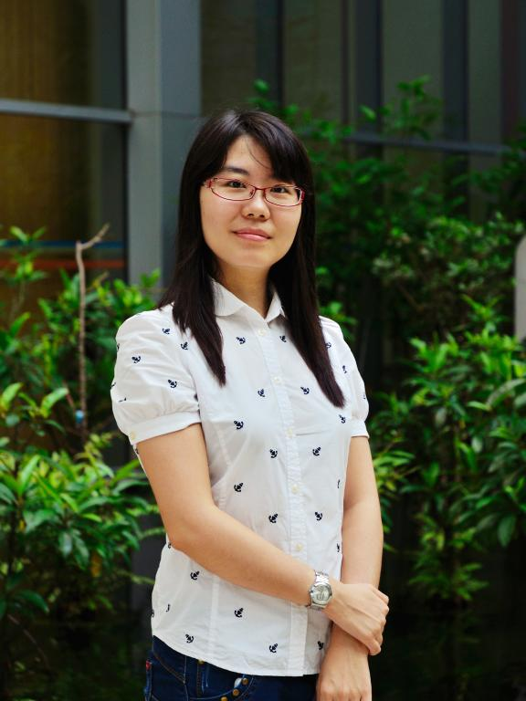
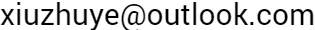

|  |
叶修竹
副教授，博士生导师，特别研究员
北京理工大学，信息与电子学院

|
叶修竹，2008年于哈尔滨工业大学通信工程专业学士学位，2012年于新加坡国立大学获得博士学位，2013年加入北京航空航天大学，于2017年2月受Paris Sud资助为短期特邀教授，2019年加入北京理工大学信息与电子学院，任特别研究员，博士生导师。 叶修竹博士在微波计算成像算法及其应用方面有着近十年的研究经验。在微波成像方面共发表论文50余篇，其在新加坡国立大学网站的博士论文已被下载及阅读300余次。主持项目10余项，其中包括国家自然基金项目2项，航空基金重点基金，以及国家重点实验室基金等。 为IEEE协会高级会员，任电子学会青年女科学家俱乐部理事，获得北京航空航天大学“青年拔尖人才”等称号。曾多次在国际会议上做特邀报告，组织并担任国际会议分会主席、技术委员会成员。为IEEE Transactions on AP、MTT、AWPL、AP Magazine等多个顶级期刊审稿人。
实验室常年招收博士硕士。现拟招收2020年秋季入学博士生，希望该同学有扎实的电磁场微波技术基础，数理基础及英文文献阅读能力。有微波电磁场相关研究经历者优先。 特别欢迎对深度学习算法感兴趣的同学。博士培养周期为四年，期间有机会送往海外进行联合培养。欢迎感兴趣的同学积极联系。
工作经历
- 2019-今, 副教授，博导，特别研究员，北京理工大学，信息与电子学院
- 2013 - 2019, 讲师，北京航空航天大学，电子信息工程学院
- 2012 - 2013, Research Fellow，National University of Singapore，Department of Electrical and Computer Engineering
教育经历
- 2008 – 2012, Doctor of Philosophy, National University of Singapore，Department of Electrical and Computer Engineering
- 2004 - 2008, 学士，哈尔滨工业大学，通信工程专业
研究方向
- 软件方向--电磁成像算法及其在医疗成像、无损检测、显微成像、石油勘探等方面的应用。
- 硬件方向--微波器件设计，各类天线设计，微波信号收发系统。
- 近年来工作重点在基于深度学习的快速成像算法及微波成像系统的集成.
发表论文
在微波成像领域共发表论文50余篇。
论文列表见此链接
对外交流与合作
- 2017年受法国CNRS下属的L2S实验室资助，任“特邀教授”访问2个月，就电磁散射测量技术和探地雷达技术进行交流访问。
- 意大利University of Trento ELEDIA Research Center中心主任Prof. Massa（IEEE Fellow），共同合作发表三维成像论文一篇。
- 新加坡国立大学微波工程实验室Prof Chen Xudong，共同合作人体医疗成像算法及逆散射成像算法，发表论文多篇。
学术活动
- IEEE Senior Member
- 电子学会青年女科学家俱乐部理事
- 期刊审稿
- SCI Q1区源刊IEEE Transaction on antenna and propagation审稿人
- SCI Q1区源刊IEEE Transaction on microwave theory and technology审稿人
- SCI Q1区源刊Optics Express审稿人
- SCI Q2区源刊IEEE Antennas and Wireless Propagation Letters 审稿人
- SCI Q2区源刊IEEE Antennas and Propagation Magazine审稿人
- 以及一系列SCI电磁领域源刊审稿人包括Radio Science，International Journal of RF and Microwave Computer-Aided Engineering， International Journal of Numerical Modelling: Electronic Networks,Devices and Fields等期刊。
- 学术会议
- 12.2019 技术委员会成员，Technical Program Committee (TPC), 2019 IEEE Asia Pacific Microwave Conference, Singapore.
- 08.2019 分会主席和组织者，2019 International Conference on Microwave and Millimeter Wave Technology，Guangzhou, China
- 05.2019 分会主席和组织者，The Applied Computational Electromagnetics Society Conference 2019，Nanjing, China
- 03.2019 分会主席和组织者，2019 IEEE International Conference on Computational Electromagnetics，Shanghai, China
- 08.2018 特别分会主席和组织者（Special session Organizer & Chair）, 5_FocusSession.SC5: Inverse Scattering, Imaging, and Remote Sensing, 40th Progress in Electromagnetics Research Symposium (PIERS), Toyama, Japan
- 07.2018 特别分会主席和组织者（Special session committee chair）, the New Electromagnetic Imaging Technique and System, 2018 Cross Strait Quad-Regional Radio Science and Wireless Technology Conference, Xuzhou, China
- 08.2017 分会主席和组织者（Session Organizer & Chair）, TH2-A: New strategies and algorithms for electromagnetic imaging, 2017 International Applied Computational Electromagnetics Society Symposium, Suzhou, China
- 08.2016 特邀报告（Invited talk）, focus section SC5: Inverse Scattering and Imaging II, 37th Progress in Electromagnetics Research Symposium (PIERS), Shanghai, China
- 07.2016 技术委员会成员，Technical Program Committee (TPC), IEEE MTT-S International Microwave Workshop Series on Advanced Materials and Processes for RF and THz Applications, Chengdu, China
- 07.2015 专题会议主席和组织者，Co-organizer and Chair of focus section SC5: Imaging, Inverse Scattering and Remote Sensing I&II, 36th Progress in Electromagnetics Research Symposium (PIERS), Prague, Czech
- 07.2015 技术委员会成员，Technical Program Committee (TPC), International Microwave Workshop Series on Advanced Materials and Processes for RF and THz Applications, Suzhou, China